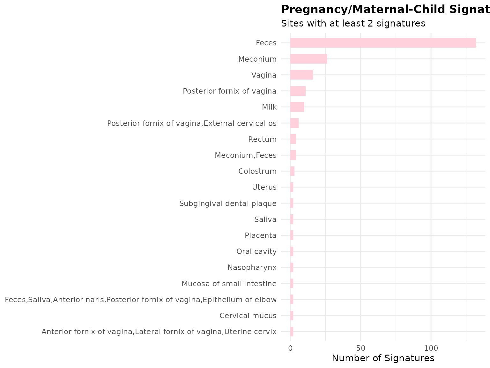
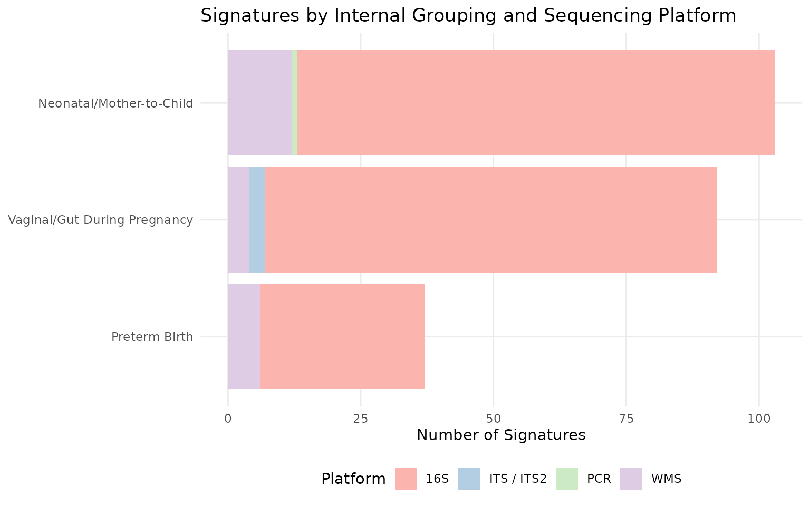
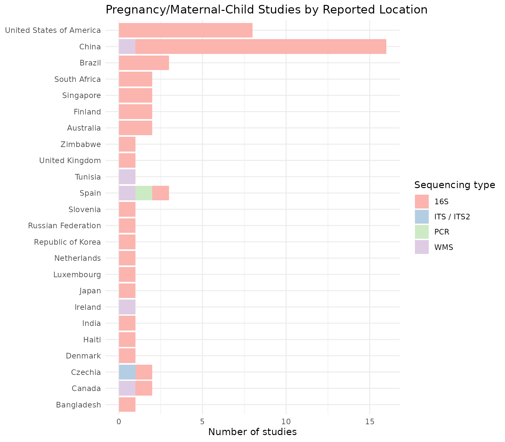
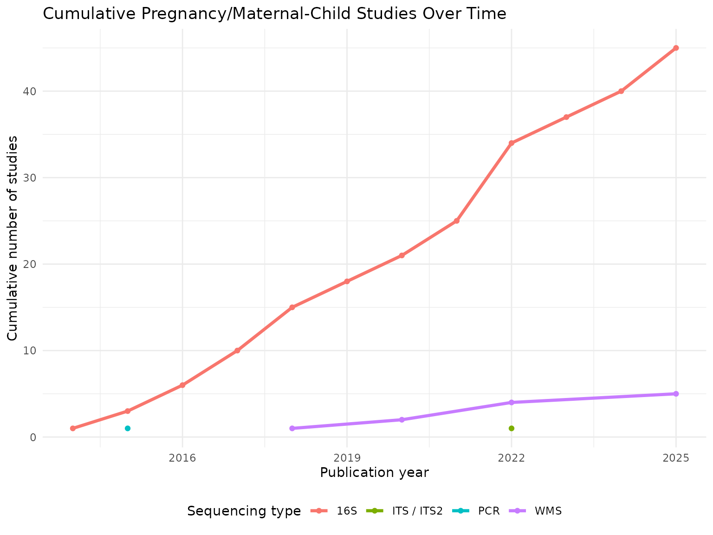
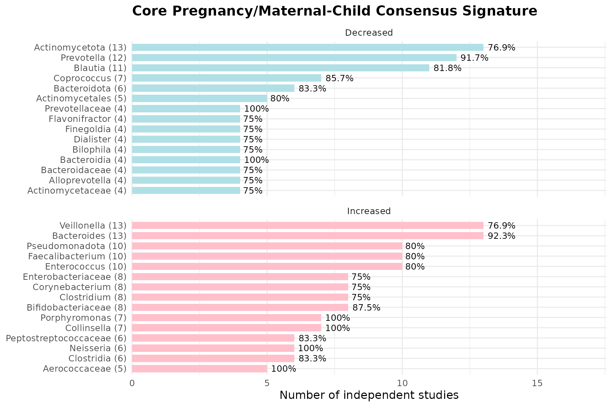
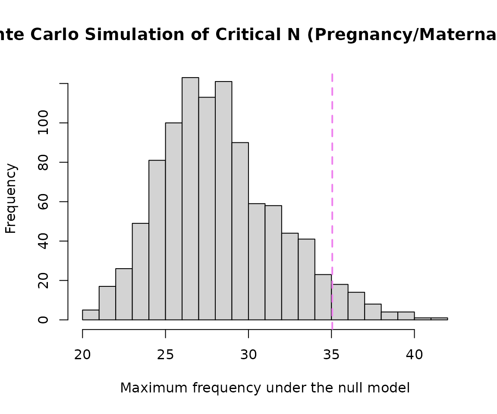
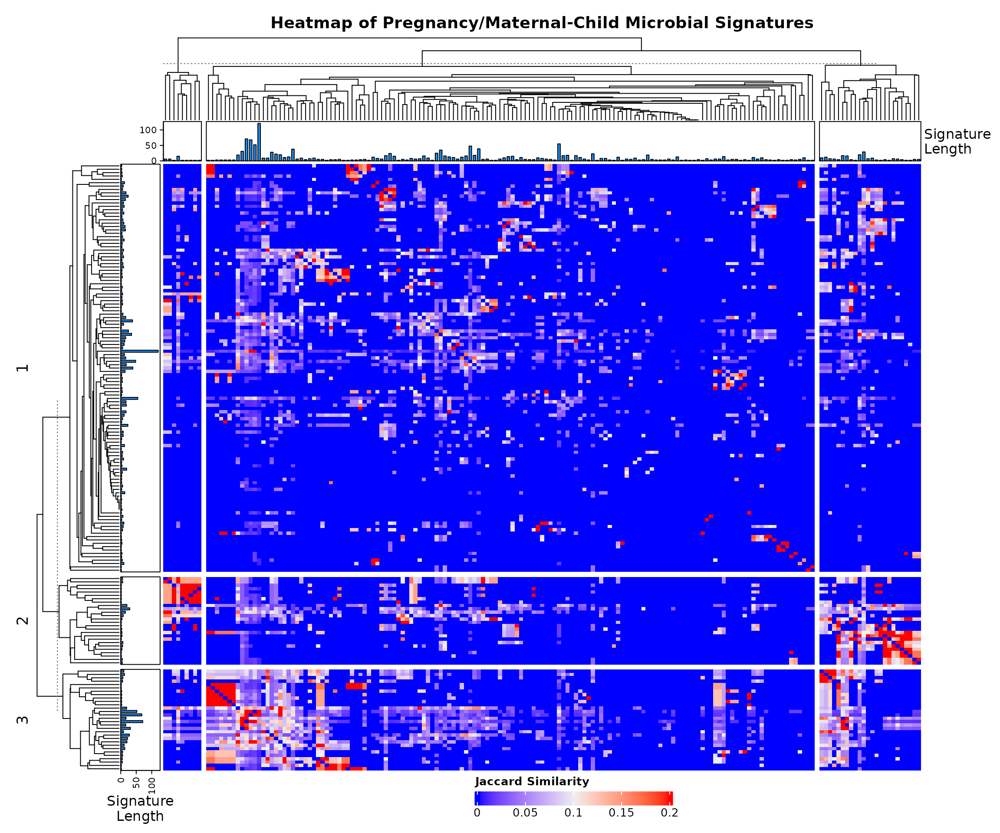

Focused Sub-Analysis of Pregnancy & Maternal-Child Microbial Signatures
Vaginal/Gut Changes in Pregnancy, Preterm Birth, and Mother-to-Child Transmission (BugSigDB)
Sally Karimi Kinyua
Source:vignettes/WomensHealth_Pregnancy_vignette.Rmd
WomensHealth_Pregnancy_vignette.RmdIntroduction
This vignette focuses on pregnancy and maternal-child microbiome signatures curated in BugSigDB, spanning three internal groupings: (1) vaginal/gut microbiome changes during pregnancy itself, (2) preterm birth-associated signatures, and (3) neonatal/infant gut microbiome signatures reflecting mother-to-child transmission. A fourth topic, postpartum microbiome changes, is deliberately not included as a formal sub-grouping here: BugSigDB currently has no dedicated postpartum condition term, and a keyword search across study titles/keywords/group names turned up only a single clean postpartum-specific comparison (Study 617: maternal vs. infant samples at 6 weeks postpartum) - too sparse for formal statistical treatment. It is mentioned only as a single case-study example in the Discussion section below.
Download and Prepare Data
full.dat <- bugsigdbr::importBugSigDB(cache = FALSE)Select Pregnancy/Maternal-Child Signatures
pregnancy_vaginal_gut_terms <- c(
"Pregnancy", "Gestational age", "Gestational diabetes", "Vaginal microbiome measurement"
)
preterm_birth_terms <- c(
"Premature birth", "Spontaneous preterm birth", "Preterm premature rupture of the membranes",
"Birth weight", "Birth measurement"
)
neonatal_mother_child_terms <- c(
"HIV mother to child transmission", "Neonatal death", "Neonatal jaundice",
"Postnatal growth retardation", "Necrotizing enterocolitis", "Breastfeeding duration",
"Breastfeeding duration,Transport", "Maternal milk", "Cesarean section", "Delivery method"
)
pregnancy_terms <- c(
pregnancy_vaginal_gut_terms, preterm_birth_terms, neonatal_mother_child_terms
)
pregnancy_dat <- dat %>%
filter(Condition %in% pregnancy_terms) %>%
distinct()
nrow(pregnancy_dat)## [1] 232| Condition | n |
|---|---|
| Gestational diabetes | 71 |
| Cesarean section | 29 |
| Breastfeeding duration | 22 |
| Delivery method | 21 |
| Pregnancy | 17 |
| HIV mother to child transmission | 15 |
| Birth measurement | 11 |
| Premature birth | 11 |
| Spontaneous preterm birth | 10 |
| Postnatal growth retardation | 5 |
| Gestational age | 4 |
| Neonatal jaundice | 4 |
| Preterm premature rupture of the membranes | 4 |
| Necrotizing enterocolitis | 3 |
| Breastfeeding duration,Transport | 2 |
| Maternal milk | 2 |
| Birth weight | 1 |
Breakdown by Internal Grouping
pregnancy_dat <- pregnancy_dat %>%
mutate(
subgroup = case_when(
Condition %in% pregnancy_vaginal_gut_terms ~ "Vaginal/Gut During Pregnancy",
Condition %in% preterm_birth_terms ~ "Preterm Birth",
Condition %in% neonatal_mother_child_terms ~ "Neonatal/Mother-to-Child",
TRUE ~ "Other"
)
)
pregnancy_dat %>%
count(subgroup, sort = TRUE) %>%
knitr::kable(caption = "Signatures per Internal Grouping")| subgroup | n |
|---|---|
| Neonatal/Mother-to-Child | 103 |
| Vaginal/Gut During Pregnancy | 92 |
| Preterm Birth | 37 |
Study Characteristics
study.summary <- pregnancy_dat %>%
count(`Body site`, `Sequencing type`)
knitr::kable(study.summary)| Body site | Sequencing type | n |
|---|---|---|
| Anterior fornix of vagina,Lateral fornix of vagina,Uterine cervix | 16S | 2 |
| Cervical mucus | 16S | 2 |
| Colostrum | 16S | 3 |
| Feces | 16S | 120 |
| Feces | ITS / ITS2 | 3 |
| Feces | PCR | 1 |
| Feces | WMS | 8 |
| Feces,Saliva,Anterior naris,Posterior fornix of vagina,Epithelium of elbow | 16S | 2 |
| Meconium | 16S | 24 |
| Meconium | WMS | 2 |
| Meconium,Feces | 16S | 4 |
| Milk | 16S | 10 |
| Mucosa of small intestine | 16S | 2 |
| Nasopharynx | WMS | 2 |
| Oral cavity | 16S | 2 |
| Placenta | 16S | 2 |
| Posterior fornix of vagina | 16S | 11 |
| Posterior fornix of vagina,External cervical os | WMS | 6 |
| Rectum | 16S | 4 |
| Saliva | 16S | 2 |
| Subgingival dental plaque | 16S | 2 |
| Uterus | 16S | 2 |
| Vagina | 16S | 12 |
| Vagina | WMS | 4 |
| Year | n |
|---|---|
| 2014 | 3 |
| 2015 | 9 |
| 2016 | 9 |
| 2017 | 17 |
| 2018 | 44 |
| 2019 | 8 |
| 2020 | 16 |
| 2021 | 10 |
| 2022 | 58 |
| 2023 | 9 |
| 2024 | 22 |
| 2025 | 27 |
pregnancy_dat %>%
count(`Body site`, sort = TRUE) %>%
filter(n >= 2) %>%
ggplot(aes(x = reorder(`Body site`, n), y = n)) +
geom_col(fill = "#FFD1DC", width = 0.6) +
coord_flip() +
labs(
title = "Pregnancy/Maternal-Child Signatures by Body Site",
subtitle = "Sites with at least 2 signatures",
x = NULL, y = "Number of Signatures"
) +
theme_minimal(base_size = 11) +
theme(plot.title = element_text(face = "bold"))
pregnancy_dat %>%
count(subgroup, `Sequencing type`) %>%
ggplot(aes(x = reorder(subgroup, n), y = n, fill = `Sequencing type`)) +
geom_col() +
coord_flip() +
# Palette sized to however many sequencing types are present
scale_fill_brewer(palette = "Pastel1") +
labs(
title = "Signatures by Internal Grouping and Sequencing Platform",
x = NULL, y = "Number of Signatures", fill = "Platform"
) +
theme_minimal(base_size = 11) +
theme(
legend.position = "bottom",
panel.grid.minor = element_blank()
)
pregnancy_dat %>%
distinct(PMID, `Location of subjects`, `Sequencing type`) %>%
filter(!is.na(`Location of subjects`)) %>%
count(`Location of subjects`, `Sequencing type`) %>%
ggplot(aes(x = reorder(`Location of subjects`, n), y = n, fill = `Sequencing type`)) +
geom_col() +
coord_flip() +
# Palette sized to however many sequencing types are present
scale_fill_brewer(palette = "Pastel1") +
labs(
title = "Pregnancy/Maternal-Child Studies by Reported Location",
x = NULL,
y = "Number of studies"
) +
theme_minimal(base_size = 11)
pregnancy_dat %>%
distinct(PMID, Year, `Sequencing type`) %>%
filter(!is.na(Year)) %>%
count(Year, `Sequencing type`) %>%
group_by(`Sequencing type`) %>%
arrange(Year) %>%
mutate(cumulative_n = cumsum(n)) %>%
ungroup() %>%
ggplot(aes(x = Year, y = cumulative_n, color = `Sequencing type`)) +
geom_line(linewidth = 1.2) +
geom_point() +
labs(
title = "Cumulative Pregnancy/Maternal-Child Studies Over Time",
x = "Publication year", y = "Cumulative number of studies", color = "Sequencing type"
) +
theme_minimal(base_size = 11) +
theme(legend.position = "bottom")
Taxonomic Summary
taxa.table <- createTaxonTable(pregnancy_dat)
knitr::kable(head(taxa.table, 20))| Taxon Name | Taxonomic Level | total_signatures | increased_signatures | decreased_signatures | Binomial Test pval |
|---|---|---|---|---|---|
| Bacteroides | genus | 33 | 19 | 14 | 0.4900 |
| Lactobacillus | genus | 26 | 15 | 11 | 0.5600 |
| Faecalibacterium | genus | 22 | 11 | 11 | 1.0000 |
| Veillonella | genus | 22 | 10 | 12 | 0.8300 |
| Staphylococcus | genus | 21 | 11 | 10 | 1.0000 |
| Streptococcus | genus | 21 | 9 | 12 | 0.6600 |
| Bifidobacterium | genus | 19 | 16 | 3 | 0.0044 |
| Bacillota | phylum | 18 | 13 | 5 | 0.0960 |
| Blautia | genus | 18 | 13 | 5 | 0.0960 |
| Prevotella | genus | 18 | 7 | 11 | 0.4800 |
Split by Sequencing Type
preg.wms <- pregnancy_dat %>% filter(`Sequencing type` == "WMS")
preg.16s <- pregnancy_dat %>% filter(`Sequencing type` == "16S")
cat("WMS - signatures:", nrow(preg.wms), "| studies:", n_distinct(preg.wms$PMID), "\n")## WMS - signatures: 22 | studies: 5
cat("16S - signatures:", nrow(preg.16s), "| studies:", n_distinct(preg.16s$PMID), "\n")## 16S - signatures: 206 | studies: 45Long-Format Taxon Table
sigs.pregnancy <- bugsigdbr::getSignatures(pregnancy_dat, tax.id.type = "taxname")
sigs.all <- bugsigdbr::getSignatures(dat, tax.id.type = "taxname")
taxon.long <- purrr::map_dfr(seq_along(sigs.all), function(i) {
taxa <- sigs.all[[i]]
if (length(taxa) == 0) return(NULL)
tibble::tibble(sig_id = i, taxon = taxa)
}) %>%
left_join(
dat %>%
mutate(sig_id = row_number()) %>%
select(sig_id, PMID, Condition, `Sequencing type`, `Abundance in Group 1`),
by = "sig_id"
) %>%
rename(direction = `Abundance in Group 1`)
nrow(taxon.long)## [1] 58971Taxon Frequency Across Studies
taxon.freq <- taxon.long %>%
filter(Condition %in% pregnancy_terms) %>%
distinct(PMID, taxon, direction) %>%
count(taxon, direction, name = "n_studies") %>%
group_by(taxon) %>%
mutate(total_studies = sum(n_studies)) %>%
ungroup() %>%
arrange(desc(total_studies))
n_distinct(taxon.freq$taxon)## [1] 793
taxon.freq %>%
distinct(taxon, total_studies) %>%
slice_max(total_studies, n = 15) %>%
knitr::kable()| taxon | total_studies |
|---|---|
| Bacillota | 17 |
| Bacteroides | 17 |
| Veillonella | 17 |
| Prevotella | 16 |
| Streptococcus | 16 |
| Actinomycetota | 15 |
| Bifidobacterium | 15 |
| Lactobacillus | 15 |
| Blautia | 14 |
| Lachnospiraceae | 13 |
| Oscillospiraceae | 13 |
| Erysipelotrichaceae | 12 |
| Faecalibacterium | 12 |
| Haemophilus | 12 |
| Eubacteriales | 11 |
| Ruminococcus | 11 |
Core Consensus Signature
concordance <- taxon.long %>%
filter(Condition %in% pregnancy_terms) %>%
distinct(PMID, taxon, direction) %>%
group_by(taxon) %>%
summarise(
n_studies = n_distinct(PMID),
n_increased = sum(direction == "increased"),
n_decreased = sum(direction == "decreased"),
concordance_pct = round(max(n_increased, n_decreased) / n_studies * 100, 1),
majority_dir = if_else(n_increased >= n_decreased, "increased", "decreased"),
.groups = "drop"
) %>%
arrange(desc(n_studies), desc(concordance_pct))
# Standard threshold; loosen to >=2/>=70% (as done for Cervical Cancer) if this
# returns very few/zero rows, and note that deviation in the Discussion section.
core.sig <- concordance %>%
filter(n_studies >= 3, concordance_pct >= 75) %>%
arrange(majority_dir, desc(n_studies))
nrow(core.sig)## [1] 65
knitr::kable(core.sig)| taxon | n_studies | n_increased | n_decreased | concordance_pct | majority_dir |
|---|---|---|---|---|---|
| Actinomycetota | 13 | 5 | 10 | 76.9 | decreased |
| Prevotella | 12 | 5 | 11 | 91.7 | decreased |
| Blautia | 11 | 5 | 9 | 81.8 | decreased |
| Coprococcus | 7 | 3 | 6 | 85.7 | decreased |
| Bacteroidota | 6 | 2 | 5 | 83.3 | decreased |
| Actinomycetales | 5 | 1 | 4 | 80.0 | decreased |
| Bacteroidia | 4 | 0 | 4 | 100.0 | decreased |
| Prevotellaceae | 4 | 0 | 4 | 100.0 | decreased |
| Actinomycetaceae | 4 | 1 | 3 | 75.0 | decreased |
| Alloprevotella | 4 | 2 | 3 | 75.0 | decreased |
| Bacteroidaceae | 4 | 2 | 3 | 75.0 | decreased |
| Bilophila | 4 | 1 | 3 | 75.0 | decreased |
| Dialister | 4 | 1 | 3 | 75.0 | decreased |
| Finegoldia | 4 | 2 | 3 | 75.0 | decreased |
| Flavonifractor | 4 | 2 | 3 | 75.0 | decreased |
| Odoribacter | 4 | 2 | 3 | 75.0 | decreased |
| Peptococcaceae | 4 | 1 | 3 | 75.0 | decreased |
| Sutterella | 4 | 2 | 3 | 75.0 | decreased |
| Anaerococcus | 3 | 0 | 3 | 100.0 | decreased |
| Bacteroidales | 3 | 0 | 3 | 100.0 | decreased |
| Butyricicoccus | 3 | 0 | 3 | 100.0 | decreased |
| Faecalibacterium prausnitzii | 3 | 1 | 3 | 100.0 | decreased |
| Lachnospira | 3 | 0 | 3 | 100.0 | decreased |
| Mogibacterium | 3 | 0 | 3 | 100.0 | decreased |
| Negativicutes | 3 | 1 | 3 | 100.0 | decreased |
| Phyllobacterium | 3 | 0 | 3 | 100.0 | decreased |
| Bacteroides | 13 | 12 | 5 | 92.3 | increased |
| Veillonella | 13 | 10 | 7 | 76.9 | increased |
| Enterococcus | 10 | 8 | 2 | 80.0 | increased |
| Faecalibacterium | 10 | 8 | 4 | 80.0 | increased |
| Pseudomonadota | 10 | 8 | 2 | 80.0 | increased |
| Bifidobacteriaceae | 8 | 7 | 3 | 87.5 | increased |
| Clostridium | 8 | 6 | 4 | 75.0 | increased |
| Corynebacterium | 8 | 6 | 3 | 75.0 | increased |
| Enterobacteriaceae | 8 | 6 | 2 | 75.0 | increased |
| Collinsella | 7 | 7 | 0 | 100.0 | increased |
| Porphyromonas | 7 | 7 | 1 | 100.0 | increased |
| Neisseria | 6 | 6 | 1 | 100.0 | increased |
| Clostridia | 6 | 5 | 3 | 83.3 | increased |
| Peptostreptococcaceae | 6 | 5 | 4 | 83.3 | increased |
| Aerococcaceae | 5 | 5 | 0 | 100.0 | increased |
| Eubacterium | 5 | 5 | 2 | 100.0 | increased |
| Coprobacillus | 5 | 4 | 1 | 80.0 | increased |
| Rothia | 5 | 4 | 1 | 80.0 | increased |
| Turicibacter | 5 | 4 | 1 | 80.0 | increased |
| Bifidobacteriales | 4 | 4 | 0 | 100.0 | increased |
| Holdemania | 4 | 4 | 0 | 100.0 | increased |
| Acidaminococcus | 4 | 3 | 2 | 75.0 | increased |
| Coriobacteriales | 4 | 3 | 1 | 75.0 | increased |
| Enterococcaceae | 4 | 3 | 1 | 75.0 | increased |
| Erysipelotrichales | 4 | 3 | 2 | 75.0 | increased |
| Lactobacillales | 4 | 3 | 1 | 75.0 | increased |
| Leptotrichia | 4 | 3 | 2 | 75.0 | increased |
| Propionibacteriaceae | 4 | 3 | 1 | 75.0 | increased |
| Selenomonas | 4 | 3 | 1 | 75.0 | increased |
| Butyrivibrio | 3 | 3 | 0 | 100.0 | increased |
| Christensenella | 3 | 3 | 1 | 100.0 | increased |
| Collinsella aerofaciens | 3 | 3 | 0 | 100.0 | increased |
| Corynebacteriaceae | 3 | 3 | 0 | 100.0 | increased |
| Enhydrobacter | 3 | 3 | 0 | 100.0 | increased |
| Leptotrichiaceae | 3 | 3 | 0 | 100.0 | increased |
| Micrococcaceae | 3 | 3 | 1 | 100.0 | increased |
| Moraxellaceae | 3 | 3 | 0 | 100.0 | increased |
| Phascolarctobacterium | 3 | 3 | 0 | 100.0 | increased |
| Staphylococcaceae | 3 | 3 | 0 | 100.0 | increased |
Core Signature Visualisation
if (nrow(core.sig) > 0) {
core.sig %>%
group_by(majority_dir) %>%
slice_max(n_studies, n = 15, with_ties = FALSE) %>%
ungroup() %>%
mutate(
direction_label = if_else(majority_dir == "increased", "Increased", "Decreased"),
taxon_label = paste0(str_wrap(taxon, width = 28), " (", n_studies, ")")
) %>%
ggplot(aes(x = reorder(taxon_label, n_studies), y = n_studies, fill = direction_label)) +
geom_col(width = 0.7) +
geom_text(aes(label = paste0(concordance_pct, "%")), hjust = -0.15, size = 3.3) +
coord_flip(clip = "off") +
facet_wrap(~direction_label, scales = "free_y", ncol = 1) +
scale_fill_manual(values = c("Increased" = "#FFC0CB", "Decreased" = "#B0E0E6")) +
scale_y_continuous(expand = expansion(mult = c(0, 0.35))) +
labs(
title = "Core Pregnancy/Maternal-Child Consensus Signature",
x = NULL, y = "Number of independent studies", fill = NULL
) +
theme_minimal(base_size = 12) +
theme(legend.position = "none", plot.title = element_text(face = "bold"))
} else {
cat("No taxa met the core-signature threshold at this sample size.")
}
WMS vs 16S Concordance
dir.by.platform <- taxon.long %>%
filter(Condition %in% pregnancy_terms) %>%
filter(`Sequencing type` %in% c("WMS", "16S")) %>%
distinct(PMID, taxon, direction, `Sequencing type`) %>%
count(taxon, `Sequencing type`, direction, name = "n_studies") %>%
group_by(taxon, `Sequencing type`) %>%
slice_max(n_studies, n = 1, with_ties = FALSE) %>%
ungroup() %>%
select(taxon, `Sequencing type`, majority_dir = direction)
platform.compare <- dir.by.platform %>%
pivot_wider(names_from = `Sequencing type`, values_from = majority_dir) %>%
filter(!is.na(WMS), !is.na(`16S`)) %>%
rename(dir_WMS = WMS, dir_16S = `16S`) %>%
mutate(agree = dir_WMS == dir_16S)
nrow(platform.compare)## [1] 59
if (nrow(platform.compare) > 0) {
sum(platform.compare$agree)
round(100 * mean(platform.compare$agree), 1)
knitr::kable(platform.compare)
} else {
cat("No taxa reported by both WMS and 16S in this pregnancy dataset.")
}| taxon | dir_16S | dir_WMS | agree |
|---|---|---|---|
| Abiotrophia defectiva | increased | increased | TRUE |
| Actinomyces | decreased | decreased | TRUE |
| Actinomyces graevenitzii | decreased | decreased | TRUE |
| Actinomyces naeslundii | decreased | increased | FALSE |
| Actinomyces oris | increased | increased | TRUE |
| Actinomycetaceae | decreased | decreased | TRUE |
| Alloprevotella | decreased | decreased | TRUE |
| Anaerotruncus | decreased | increased | FALSE |
| Bacillota | decreased | decreased | TRUE |
| Bacteroidales | decreased | decreased | TRUE |
| Bacteroidia | decreased | decreased | TRUE |
| Bacteroidota | decreased | decreased | TRUE |
| Bifidobacterium | increased | decreased | FALSE |
| Bifidobacterium longum | increased | decreased | FALSE |
| Blautia | decreased | decreased | TRUE |
| Blautia wexlerae | decreased | decreased | TRUE |
| Butyricimonas | decreased | increased | FALSE |
| Candida | decreased | decreased | TRUE |
| Clostridiaceae | increased | decreased | FALSE |
| Collinsella | increased | increased | TRUE |
| Collinsella aerofaciens | increased | increased | TRUE |
| Coprococcus | decreased | decreased | TRUE |
| Desulfovibrio | increased | increased | TRUE |
| Dorea | decreased | decreased | TRUE |
| Enterobacter | decreased | increased | FALSE |
| Enterobacteriaceae | increased | increased | TRUE |
| Enterococcus | increased | increased | TRUE |
| Erwinia | increased | increased | TRUE |
| Erysipelotrichaceae | decreased | decreased | TRUE |
| Escherichia | decreased | increased | FALSE |
| Eubacterium | increased | decreased | FALSE |
| Faecalibacterium | increased | decreased | FALSE |
| Faecalibacterium prausnitzii | decreased | decreased | TRUE |
| Gemella haemolysans | decreased | increased | FALSE |
| Klebsiella | decreased | increased | FALSE |
| Lachnospira | decreased | decreased | TRUE |
| Lachnospiraceae | decreased | decreased | TRUE |
| Lactobacillaceae | decreased | decreased | TRUE |
| Lactobacillus | increased | decreased | FALSE |
| Lautropia mirabilis | increased | increased | TRUE |
| Leptotrichia sp. | decreased | increased | FALSE |
| Odoribacter | decreased | decreased | TRUE |
| Oscillospiraceae | increased | decreased | FALSE |
| Parabacteroides | increased | increased | TRUE |
| Parabacteroides johnsonii | increased | decreased | FALSE |
| Peptococcaceae | decreased | decreased | TRUE |
| Peptostreptococcaceae | increased | decreased | FALSE |
| Prevotella histicola | increased | decreased | FALSE |
| Prevotella pallens | decreased | decreased | TRUE |
| Pseudobutyrivibrio | increased | decreased | FALSE |
| Pseudomonadota | increased | increased | TRUE |
| Roseburia | decreased | decreased | TRUE |
| Rothia aeria | decreased | increased | FALSE |
| Rothia dentocariosa | decreased | increased | FALSE |
| Ruminococcus bromii | decreased | decreased | TRUE |
| Serratia | decreased | increased | FALSE |
| Solobacterium moorei | decreased | decreased | TRUE |
| Streptococcus sanguinis | decreased | increased | FALSE |
| Veillonella parvula | decreased | increased | FALSE |
Taxon Enrichment Analysis
n.universe <- n_distinct(taxon.long %>% filter(Condition %in% pregnancy_terms) %>% pull(taxon))
n.sigs <- length(sigs.pregnancy)
enrichment.df <- taxon.freq %>%
distinct(taxon, total_studies) %>%
mutate(
observed = total_studies,
expected = n.sigs / n.universe,
enrichment_ratio = observed / expected,
log2_enrichment = log2(enrichment_ratio),
p_value = purrr::map_dbl(observed, ~ binom.test(
x = .x, n = n.sigs, p = 1 / n.universe, alternative = "greater"
)$p.value),
p_adj = p.adjust(p_value, method = "BH")
) %>%
arrange(p_adj, desc(log2_enrichment))
sum(enrichment.df$p_adj < 0.05)## [1] 160| taxon | total_studies | observed | expected | enrichment_ratio | log2_enrichment | p_value | p_adj |
|---|---|---|---|---|---|---|---|
| Bacillota | 17 | 17 | 0.2887768 | 58.86900 | 5.879436 | 0 | 0 |
| Bacteroides | 17 | 17 | 0.2887768 | 58.86900 | 5.879436 | 0 | 0 |
| Veillonella | 17 | 17 | 0.2887768 | 58.86900 | 5.879436 | 0 | 0 |
| Prevotella | 16 | 16 | 0.2887768 | 55.40611 | 5.791973 | 0 | 0 |
| Streptococcus | 16 | 16 | 0.2887768 | 55.40611 | 5.791973 | 0 | 0 |
| Actinomycetota | 15 | 15 | 0.2887768 | 51.94323 | 5.698864 | 0 | 0 |
| Bifidobacterium | 15 | 15 | 0.2887768 | 51.94323 | 5.698864 | 0 | 0 |
| Lactobacillus | 15 | 15 | 0.2887768 | 51.94323 | 5.698864 | 0 | 0 |
| Blautia | 14 | 14 | 0.2887768 | 48.48035 | 5.599328 | 0 | 0 |
| Lachnospiraceae | 13 | 13 | 0.2887768 | 45.01747 | 5.492413 | 0 | 0 |
| Oscillospiraceae | 13 | 13 | 0.2887768 | 45.01747 | 5.492413 | 0 | 0 |
| Erysipelotrichaceae | 12 | 12 | 0.2887768 | 41.55459 | 5.376936 | 0 | 0 |
| Faecalibacterium | 12 | 12 | 0.2887768 | 41.55459 | 5.376936 | 0 | 0 |
| Haemophilus | 12 | 12 | 0.2887768 | 41.55459 | 5.376936 | 0 | 0 |
| Eubacteriales | 11 | 11 | 0.2887768 | 38.09170 | 5.251405 | 0 | 0 |
Monte Carlo Critical N
siglengths <- lengths(pregnancy_dat$`MetaPhlAn taxon names`)
criticalN <- getCriticalN(
relevant.sigs = pregnancy_dat$`MetaPhlAn taxon names`,
siglengths = siglengths
)
criticalN## $critical_n
## 95%
## 35.05
##
## $ci_lower
## 2.5%
## 35
##
## $ci_upper
## 97.5%
## 36
##
## $simulated_values
## [1] 29 28 24 32 28 27 37 24 28 31 28 31 30 30 27 37 33 25 31 35 28 27 29 29
## [25] 27 23 31 31 28 28 29 26 23 35 26 28 29 30 28 29 34 34 24 25 26 29 27 26
## [49] 27 31 27 29 33 25 27 35 34 30 32 34 34 35 27 25 26 27 26 27 24 32 28 30
## [73] 26 28 42 22 29 30 30 26 31 40 28 33 34 30 27 36 28 27 27 27 29 28 29 34
## [97] 29 39 25 32 29 29 28 34 26 26 32 27 26 24 31 29 26 29 37 28 26 30 25 29
## [121] 26 23 31 26 26 31 24 30 33 27 34 31 33 24 28 36 33 31 27 30 25 26 29 27
## [145] 33 31 32 32 23 31 26 29 27 26 25 35 24 30 37 29 32 31 28 26 32 29 31 38
## [169] 25 30 26 30 24 32 37 35 25 31 38 32 25 28 27 29 27 23 26 22 25 31 26 29
## [193] 28 31 28 27 29 32 24 36 29 26 27 26 35 29 27 33 26 26 25 32 34 32 32 25
## [217] 25 22 30 29 26 35 29 34 34 29 33 31 31 23 26 30 26 28 27 29 27 27 29 33
## [241] 28 23 24 26 35 30 33 32 37 26 35 27 30 31 26 33 32 27 29 32 31 29 32 37
## [265] 27 29 29 27 28 25 29 39 36 29 27 26 30 30 36 26 27 36 33 24 25 31 33 30
## [289] 29 23 29 33 27 26 26 27 27 25 35 26 24 27 29 27 25 28 35 24 31 36 28 28
## [313] 30 24 29 27 33 40 24 33 25 28 34 32 31 28 30 30 26 25 24 27 24 29 21 32
## [337] 34 26 29 30 25 30 33 32 34 33 36 29 25 36 25 24 31 30 23 28 26 26 25 27
## [361] 24 28 29 30 30 33 24 34 29 28 25 29 29 29 35 27 27 29 36 28 28 29 31 30
## [385] 30 27 24 29 29 25 24 25 32 25 32 28 26 35 27 33 31 30 25 37 28 29 32 30
## [409] 26 23 21 31 28 23 29 34 28 33 30 25 30 30 28 29 23 28 25 27 29 28 29 30
## [433] 30 28 24 28 29 31 34 29 26 29 26 24 31 38 32 29 27 34 38 25 23 27 28 34
## [457] 31 23 31 30 27 26 31 29 28 30 31 27 27 28 28 29 28 27 32 38 26 29 26 27
## [481] 28 30 34 29 33 26 29 27 27 26 29 27 29 29 32 26 29 26 27 24 29 27 26 24
## [505] 28 29 27 24 28 26 32 30 30 32 33 29 29 25 32 28 26 30 28 27 23 27 25 28
## [529] 24 29 32 25 26 32 29 27 29 28 32 28 35 32 23 27 37 25 26 31 33 29 24 28
## [553] 29 29 24 29 27 27 34 25 34 27 28 25 22 27 25 29 28 29 24 28 27 27 24 26
## [577] 26 30 28 30 23 26 31 28 36 40 27 27 28 26 29 28 24 26 34 28 25 25 28 30
## [601] 28 24 30 34 32 26 30 26 34 31 26 27 22 27 23 25 25 33 29 27 33 32 25 29
## [625] 30 31 31 29 35 33 30 28 33 37 27 30 33 26 29 36 30 28 34 27 36 28 34 29
## [649] 27 29 31 25 26 23 22 30 24 34 26 33 30 28 27 38 36 32 30 26 37 32 29 26
## [673] 31 32 34 25 25 28 26 32 31 27 26 26 23 22 22 39 29 24 23 27 26 25 39 26
## [697] 30 29 30 28 29 30 22 35 25 26 29 29 27 28 21 34 30 28 30 27 25 25 31 25
## [721] 31 27 28 30 28 24 25 30 25 25 24 28 29 26 27 26 28 35 27 29 30 34 27 33
## [745] 25 30 24 28 30 27 28 30 33 25 26 26 31 25 31 33 26 25 29 26 28 30 34 27
## [769] 30 25 28 25 25 27 32 30 28 35 27 29 26 30 23 31 29 33 30 23 29 26 24 27
## [793] 32 27 28 28 27 28 29 29 28 30 34 25 24 30 26 35 31 33 38 28 28 40 27 24
## [817] 26 29 27 27 25 26 27 26 34 24 32 33 27 30 28 30 29 22 31 28 36 27 27 30
## [841] 38 30 28 33 27 25 36 28 28 25 23 22 27 27 25 28 35 27 29 29 33 34 28 27
## [865] 29 34 32 24 32 27 31 24 25 26 29 32 29 27 27 26 29 34 25 35 27 30 24 33
## [889] 25 26 27 34 22 26 32 32 24 29 26 36 26 27 31 27 32 20 30 30 25 32 27 32
## [913] 32 22 22 30 27 27 27 28 23 28 26 29 31 31 27 31 32 31 23 30 28 27 27 27
## [937] 21 28 31 30 28 28 25 34 25 29 26 30 26 25 22 28 30 37 24 30 32 25 32 28
## [961] 27 25 27 26 28 22 33 25 29 37 30 28 26 25 32 32 29 25 33 22 35 33 41 36
## [985] 29 28 34 37 28 33 30 29 28 25 28 30 31 29 28 28
##
## $alpha
## [1] 0.05
##
## $quantile_label
## [1] "95th percentile"
hist(
criticalN$simulated_values,
breaks = 30,
main = "Monte Carlo Simulation of Critical N (Pregnancy/Maternal-Child)",
xlab = "Maximum frequency under the null model"
)
abline(v = criticalN$critical_n, col = "violet", lwd = 2, lty = 2)
Cross-Condition Taxa Overlap Analysis
pregnancy_taxa <- taxon.long %>%
filter(Condition %in% pregnancy_terms) %>%
distinct(taxon) %>%
pull(taxon)
shared_taxa_counts <- taxon.long %>%
filter(taxon %in% pregnancy_taxa) %>%
group_by(taxon) %>%
summarise(
total_womens_health_studies = n_distinct(PMID),
distinct_conditions_linked = n_distinct(Condition),
top_other_conditions = paste(
head(setdiff(unique(Condition), pregnancy_terms), 3),
collapse = ", "
),
.groups = "drop"
) %>%
arrange(desc(distinct_conditions_linked))
shared_taxa_counts %>%
slice_max(distinct_conditions_linked, n = 20, with_ties = FALSE) %>%
knitr::kable(
caption = "Top Pregnancy-Associated Taxa and Their Links to Other Conditions",
col.names = c("Taxon Name", "Total WH Studies", "Total Distinct Conditions", "Other Conditions it Often Appears In")
)| Taxon Name | Total WH Studies | Total Distinct Conditions | Other Conditions it Often Appears In |
|---|---|---|---|
| Streptococcus | 347 | 214 | Granulomatosis with Polyangiitis, Diet, Autism |
| Prevotella | 354 | 211 | Illness severity status, Antimicrobial agent, Obesity |
| Lactobacillus | 335 | 201 | Antimicrobial agent, Oxygen, Illness severity status |
| Bacteroides | 345 | 199 | Autism, Autoimmune disease, Obesity |
| Lachnospiraceae | 331 | 199 | Autoimmune disease, Smoking behavior, Irritable bowel syndrome |
| Bacillota | 313 | 190 | Type II diabetes mellitus, Autism, Autoimmune disease |
| Faecalibacterium | 278 | 183 | Obesity, Autoimmune disease, Irritable bowel syndrome |
| Oscillospiraceae | 273 | 183 | Autoimmune disease, Smoking behavior, Colorectal carcinoma |
| Bifidobacterium | 275 | 177 | Food allergy, Irritable bowel syndrome, Autism |
| Clostridium | 258 | 175 | Irritable bowel syndrome, Autism, Autoimmune disease |
| Actinomycetota | 265 | 171 | Autism, Ethnic group,Place of residence measurement, Ulcerative colitis |
| Pseudomonadota | 241 | 166 | Autism, Autoimmune disease, Ethnic group,Place of residence measurement |
| Roseburia | 228 | 165 | Autoimmune disease, Smoking behavior, Irritable bowel syndrome |
| Blautia | 246 | 164 | Autoimmune disease, Irritable bowel syndrome, Colorectal cancer |
| Veillonella | 241 | 161 | Obesity, Antimicrobial agent, Oxygen |
| Bacteroidota | 247 | 158 | Autism, Autoimmune disease, Irritable bowel syndrome |
| Eubacteriales | 219 | 156 | Autoimmune disease, Colorectal carcinoma, Psoriasis |
| Enterobacteriaceae | 213 | 155 | Autoimmune disease, Irritable bowel syndrome, Sampling site |
| Haemophilus | 208 | 153 | Illness severity status, Diet, Autoimmune disease |
| Alistipes | 198 | 148 | Autoimmune disease, Irritable bowel syndrome, Colorectal cancer |
Signature Similarity and Heatmap
allsigs <- bugsigdbr::getSignatures(pregnancy_dat, tax.id.type = "taxname")
allsigs <- allsigs[sapply(allsigs, length) > 1]
if (length(allsigs) > 1) {
jmat <- BugSigDBStats::calcJaccardSimilarity(allsigs)
siglengths <- sapply(allsigs, length)
ha <- HeatmapAnnotation(
`Signature\nLength` = anno_barplot(siglengths, gp = gpar(fill = "#1E90FF"), height = unit(1.2, "cm"))
)
hr <- rowAnnotation(
`Signature\nLength` = anno_barplot(siglengths, gp = gpar(fill = "#1E90FF"), width = unit(1.2, "cm"))
)
hm <- Heatmap(
jmat,
top_annotation = ha,
left_annotation = hr,
show_row_names = FALSE,
show_column_names = FALSE,
row_km = 3,
column_km = 3,
row_gap = unit(1.5, "mm"),
column_gap = unit(1.5, "mm"),
row_dend_width = unit(2.5, "cm"),
column_dend_height = unit(2.5, "cm"),
column_title = "Heatmap of Pregnancy/Maternal-Child Microbial Signatures",
column_title_gp = gpar(fontsize = 14, fontface = "bold"),
heatmap_legend_param = list(title = "Jaccard Similarity", direction = "horizontal", legend_width = unit(6, "cm"))
)
draw(hm, heatmap_legend_side = "bottom", padding = unit(c(5, 5, 5, 5), "mm"))
png(filename = "Pregnancy_heatmap.png", width = 12, height = 10, units = "in", res = 300)
draw(hm, heatmap_legend_side = "bottom", padding = unit(c(5, 5, 5, 5), "mm"))
dev.off()
}
## agg_png
## 2Dendrogram
if (exists("jmat") && nrow(jmat) > 1) {
hc <- hclust(as.dist(1 - jmat))
dend <- as.dendrogram(hc)
par(mar = c(5, 2, 4, 2))
plot(
dend,
horiz = TRUE,
leaflab = "none",
main = "Hierarchical Cluster Map of Pregnancy/Maternal-Child Microbial Signatures",
xlab = "Distance (1 - Jaccard similarity)",
cex.main = 1.3,
lwd = 0.8
)
}